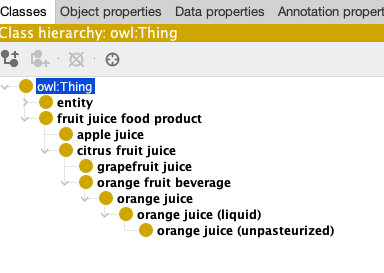

Practical introduction to OAK Lexmatch¶
In this tutorial, we will learn to use a very basic lexical matching tool (OAK Lexmatch). The goal is not only to enable the learner to design their own matching pipelines, but also to to think about how they fit into their mapping efforts. Note that this tutorial is not about how to do proper matching: the goal here is simply to introduce you to the general workflow. Proper ontology matching is a major discipline with many tools, preprocessing and tuning approaches and often intricate interplay between matching tools and human curators. Today, you will just get a sense of the general method.
Pre-requisites¶
Tutorial¶
In this tutorial, you will learn how to match fruit juices in Wikidata with FOODON using a simple lexical matching tool (OAK). The idea is simple: We obtain the ontologies we like to match, ask OAK to generate the matches and then curate the results.
- Setting up OAK, preparing the ontology: You will learn how to install OAK into a new Python environment, and create a simple
Makefileto prepare your input ontology with ROBOT. - Download Ontologies and extract subsets: Prepare the data/ontologies you want to match.
- Generate the matches with OAK: Generate the matches using a simple tool.
- Curating matching results: Manually review the results of the mars
Setting up OAK, preparing the ontology¶
Setting up oak is described in its documentation. Note that, aside from oak itself, you also need relation-graph, rdftab and riot installed, see https://incatools.github.io/ontology-access-kit/intro/tutorial07.html#without-docker.
This tutorial requires OAK version 0.1.59 or higher.
Note that if you are using the ODK docker image, oaklib is already installed. In the following, we will use the ODK wrapper to ensure that everyone has a consistent experience. If you want to use the local (non-docker) setup, you have to follow the instructions above before continuing and ignore the sh odk.sh part of the commands.
IMPORTANT for users of ODK < 1.3.2:¶
ODK 1.3.1, the version still active on the 8th December 2022, does not have the latest dependencies of OAK installed. To follow the tutorial you have to use the ODK development snapshot.
Install the ODK Development snapshot:
After downloading https://raw.githubusercontent.com/OBOAcademy/obook/master/docs/resources/odk.sh into your local working directory, open it with a text editor and change:
to
Download Ontologies and extract subsets¶
First, we download FOODON ontology. You can do this in whatever way you want, for example with wget:
Next, we extract the subset of FOODON that is relevant to our task at hand: relevant terms about fruit juices. The right method of subset extraction will differ from task to task. For this tutorial, we are using ROBOT extract to obtain a MIREOT module containing all the fruit juices. We do this by selecting everything between fruit juice food product as the upper-term and fruit juices (apple juice, orange juice and grapefruit juice) as the lower-term of the FOODON subset.
sh odk.sh robot extract --method MIREOT --input foodon.owl --upper-term "FOODON:00001140" --lower-term "FOODON:00001277" --lower-term "FOODON:00001059" --lower-term "FOODON:03306174 " --output fruit_juice_food_foodon.owl
If you open fruit_juice_food_foodon.owl in Protege, you will see something similar to:

Next, we use OAK to extract juices and their labels from wikidata by selecting the descendants of juice from wikidata, store the result as a ttl file and then convert it to OWL using ROBOT.
sh odk.sh runoak -i wikidata: descendants wikidata:Q8492 -p i,p -o juice_wd.ttl -O rdf
sh odk.sh robot convert -i juice_wd.ttl -o juice_wd.owl
Note that you wont be able to see anything when opening juice_wd.owl in wikidata, because it does not have any OWL types (class, individual assertions) attached to it. However, you can convince yourself all is well by opening juice_wd.owl in a text editor, and see expressions such as:
<rdf:Description rdf:about="http://www.wikidata.org/entity/Q10374646">
<rdfs:label>cashew apple juice</rdfs:label>
</rdf:Description>
The last preparation step is merging the two subsets (from FOODON and wikidata) into a single file using ROBOT:
Generate the matches with OAK¶
Now we are ready to create our first set of matches. First, let's run oak's lexmatch command to generate lexical matches between the contents of the merged file:
This will generate an SSSOM tsv file with the mapped contents as shown below:
# curie_map:
# FOODON: http://purl.obolibrary.org/obo/FOODON_
# owl: http://www.w3.org/2002/07/owl#
# rdf: http://www.w3.org/1999/02/22-rdf-syntax-ns#
# rdfs: http://www.w3.org/2000/01/rdf-schema#
# semapv: https://w3id.org/semapv/
# skos: http://www.w3.org/2004/02/skos/core#
# sssom: https://w3id.org/sssom/
# wikidata: http://www.wikidata.org/entity/
# license: https://w3id.org/sssom/license/unspecified
# mapping_set_id: https://w3id.org/sssom/mappings/091390a2-6f64-436d-b2d1-309045ff150c
| subject_id | subject_label | predicate_id | object_id | object_label | mapping_justification | mapping_tool | confidence | subject_match_field | object_match_field | match_string |
|---|---|---|---|---|---|---|---|---|---|---|
| FOODON:00001059 | apple juice | skos:closeMatch | wikidata:Q618355 | apple juice | semapv:LexicalMatching | oaklib | 0.5 | rdfs:label | rdfs:label | apple juice |
| FOODON:00001059 | apple juice | skos:closeMatch | wikidata:Q618355 | apple juice | semapv:LexicalMatching | oaklib | 0.5 | oio:hasExactSynonym | rdfs:label | apple juice |
| FOODON:03301103 | orange juice | skos:closeMatch | wikidata:Q219059 | orange juice | semapv:LexicalMatching | oaklib | 0.5 | rdfs:label | rdfs:label | orange juice |
| FOODON:03306174 | grapefruit juice | skos:closeMatch | wikidata:Q1138468 | grapefruit juice | semapv:LexicalMatching | oaklib | 0.5 | rdfs:label | rdfs:label | grapefruit juice |
| wikidata:Q15823640 | cherry juice | skos:closeMatch | wikidata:Q62030277 | cherry juice | semapv:LexicalMatching | oaklib | 0.5 | rdfs:label | rdfs:label | cherry juice |
| wikidata:Q18201657 | must | skos:closeMatch | wikidata:Q278818 | must | semapv:LexicalMatching | oaklib | 0.5 | rdfs:label | rdfs:label | must |
This is great - we get a few mappings without much work. If you need some help interpreting this table, please refer to the SSSOM tutorials for details.
Just eyeballing the labels in our ontology with OAK:
We notice rows like:
It may be beneficial for us to pre-process the labels a bit before performing the matches, for example, by excluding comments in the labels provided in brackets (essentially removing (liquid)).
To do this, we will define a few simple mapping rules in a file called matcher_rules.yaml. OAK provides a standard for representing the matching rules. You can see an example here.
Here is an example file:
rules:
- description: default
postconditions:
predicate_id: skos:closeMatch
weight: 0.0
- description: exact to exact
preconditions:
subject_match_field_one_of:
- oio:hasExactSynonym
- rdfs:label
- skos:prefLabel
object_match_field_one_of:
- oio:hasExactSynonym
- rdfs:label
- skos:prefLabel
postconditions:
predicate_id: skos:exactMatch
weight: 2.0
- preconditions:
subject_match_field_one_of:
- oio:hasExactSynonym
- rdfs:label
object_match_field_one_of:
- oio:hasBroadSynonym
postconditions:
predicate_id: skos:broadMatch
weight: 2.0
- synonymizer:
the_rule: Remove parentheses bound info from the label.
match: r'\([^)]*\)'
match_scope: "*"
replacement: ""
- synonymizer:
the_rule: Replace "'s" by "s" in the label.
match: r'\'s'
match_scope: "*"
replacement: "s"
As you can see, there are basically two kinds of rules: normal ones, and synonimizer ones. The normal rules provide preconditions and postconditions. For example, the second rule says: if an exact synonym, preferred label or label of the subject matches an exact synonym, preferred label or label of the object, then assert a skos:exactMatch. The synonimizer rules are preprocessing rules which are applied to the labels and synonyms prior to matching. Let's now run the matcher again:
sh odk.sh runoak -i sqlite:foodon_wd.owl lexmatch -R matcher_rules.yaml -o foodon_wd_lexmatch_with_rules.tsv
This will generate an SSSOM tsv file with a few more matches than the previous output (the exact matches may differ from version to version):
# curie_map:
# FOODON: http://purl.obolibrary.org/obo/FOODON_
# IAO: http://purl.obolibrary.org/obo/IAO_
# owl: http://www.w3.org/2002/07/owl#
# rdf: http://www.w3.org/1999/02/22-rdf-syntax-ns#
# rdfs: http://www.w3.org/2000/01/rdf-schema#
# semapv: https://w3id.org/semapv/
# skos: http://www.w3.org/2004/02/skos/core#
# sssom: https://w3id.org/sssom/
# wikidata: http://www.wikidata.org/entity/
# license: https://w3id.org/sssom/license/unspecified
# mapping_set_id: https://w3id.org/sssom/mappings/6b9c727f-9fdc-4a78-bbda-a107b403e3a9
| subject_id | subject_label | predicate_id | object_id | object_label | mapping_justification | mapping_tool | confidence | subject_match_field | object_match_field | match_string | subject_preprocessing | object_preprocessing |
|---|---|---|---|---|---|---|---|---|---|---|---|---|
| FOODON:00001001 | orange juice (liquid) | skos:exactMatch | FOODON:00001277 | orange juice (unpasteurized) | semapv:LexicalMatching | oaklib | 0.8497788951776651 | rdfs:label | rdfs:label | orange juice | semapv:RegularExpressionReplacement | semapv:RegularExpressionReplacement |
| FOODON:00001001 | orange juice (liquid) | skos:exactMatch | FOODON:03301103 | orange juice | semapv:LexicalMatching | oaklib | 0.8497788951776651 | rdfs:label | rdfs:label | orange juice | semapv:RegularExpressionReplacement | |
| FOODON:00001001 | orange juice (liquid) | skos:exactMatch | wikidata:Q219059 | orange juice | semapv:LexicalMatching | oaklib | 0.8497788951776651 | rdfs:label | rdfs:label | orange juice | semapv:RegularExpressionReplacement | |
| FOODON:00001059 | apple juice | skos:exactMatch | wikidata:Q618355 | apple juice | semapv:LexicalMatching | oaklib | 0.8497788951776651 | rdfs:label | rdfs:label | apple juice | ||
| FOODON:00001059 | apple juice | skos:exactMatch | wikidata:Q618355 | apple juice | semapv:LexicalMatching | oaklib | 0.8 | oio:hasExactSynonym | rdfs:label | apple juice | ||
| FOODON:00001277 | orange juice (unpasteurized) | skos:exactMatch | FOODON:03301103 | orange juice | semapv:LexicalMatching | oaklib | 0.8497788951776651 | rdfs:label | rdfs:label | orange juice | semapv:RegularExpressionReplacement | |
| FOODON:00001277 | orange juice (unpasteurized) | skos:exactMatch | wikidata:Q219059 | orange juice | semapv:LexicalMatching | oaklib | 0.8497788951776651 | rdfs:label | rdfs:label | orange juice | semapv:RegularExpressionReplacement | |
| FOODON:00002403 | food material | skos:exactMatch | FOODON:03430109 | food (liquid, low viscosity) | semapv:LexicalMatching | oaklib | 0.8 | oio:hasExactSynonym | rdfs:label | food | semapv:RegularExpressionReplacement | |
| FOODON:00002403 | food material | skos:exactMatch | FOODON:03430130 | food (liquid) | semapv:LexicalMatching | oaklib | 0.8 | oio:hasExactSynonym | rdfs:label | food | semapv:RegularExpressionReplacement | |
| FOODON:03301103 | orange juice | skos:exactMatch | wikidata:Q219059 | orange juice | semapv:LexicalMatching | oaklib | 0.8497788951776651 | rdfs:label | rdfs:label | orange juice | ||
| FOODON:03306174 | grapefruit juice | skos:exactMatch | wikidata:Q1138468 | grapefruit juice | semapv:LexicalMatching | oaklib | 0.8497788951776651 | rdfs:label | rdfs:label | grapefruit juice | ||
| FOODON:03430109 | food (liquid, low viscosity) | skos:exactMatch | FOODON:03430130 | food (liquid) | semapv:LexicalMatching | oaklib | 0.8497788951776651 | rdfs:label | rdfs:label | food | semapv:RegularExpressionReplacement | semapv:RegularExpressionReplacement |
| wikidata:Q15823640 | cherry juice | skos:exactMatch | wikidata:Q62030277 | cherry juice | semapv:LexicalMatching | oaklib | 0.8497788951776651 | rdfs:label | rdfs:label | cherry juice | ||
| wikidata:Q18201657 | must | skos:exactMatch | wikidata:Q278818 | must | semapv:LexicalMatching | oaklib | 0.8497788951776651 | rdfs:label | rdfs:label | must |
Curate¶
As we have described in detail in our introduction to Semantic Matching, it is important to remember that matching in its raw form should not be understood to result in semantic mappings: they are better understood as mapping candidates. Therefore, it is always to plan for a review of false positives and false negatives:
- False positive review (wrong mappings). The goal here is to identify mappings that do not work for our use case, or do not use the correct semantic mapping relation. If you look carefully through the matched files, you'll notice that manual intervention is definitely required for the matches to be accurate. For example,
orange juice [wikidata:Q219059]andorange juice (unpasteurized) [FOODON:00001277]may not be considered as the same thing in the sense ofskos:exactMatch. - False negative review (missing mappings). The goal here is to understand if we can do anything to improve the matching process by tuning it. Here, we did a little bit of that earlier when we were looking at the labels of the wikidata and FOODON juice hierarchies.
For a more detailed introduction into manual mapping curation with SSSOM we recommend following this tutorial: https://mapping-commons.github.io/sssom/tutorial/.